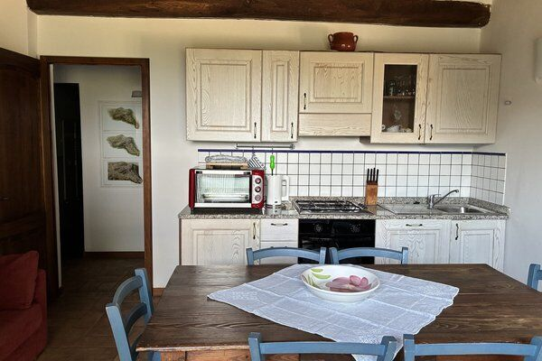

Erlebnisse
Wir organisieren keine Unterhaltung. Wir laden Sie einfach ein, das zu tun, was wir jeden Tag tun — nur etwas langsamer und mit einem Glas in der Hand.

Weinprobe im Weinberg
Unsere Reihen von Sangiovese, Canaiolo und Colorino bringen einen Chianti hervor, der nicht beeindrucken will — er erzählt die Geschichte des Bodens, des Jahrgangs, der Lage. Sie werden ihn genau dort probieren, wo er wächst, zusammen mit 12 Monate gereiftem Pecorino aus Pienza und einem Schuss unseres nativen Olivenöls extra.
Die Verkostung dauert so lange, wie Sie möchten. Wir haben keinen Timer und es gibt keinen festen Zeitplan.
Wann: auf Anfrage, vorzugsweise am späten Nachmittag
Dauer: etwa 90 Minuten
Zur Buchung: kontaktieren Sie uns

Kochen im Landhaus
Handgerollte Pici, Pappa al Pomodoro mit altbackenem Brot, morgens geknetete Mandel-Cantucci. Dies ist kein Kurs mit Schürzen und ausgedruckten Anleitungen — es ist ein Nachmittag in unserer Küche, mit den Händen im Mehl, während die Soße auf dem Holzofen köchelt.
Wir kochen zusammen und essen zusammen. Der Hauswein ist inbegriffen, die Großmutter nicht — aber ihre Rezepte sind es auf jeden Fall.
Wann: Mittwoch- und Samstagnachmittag (oder auf Anfrage)
Dauer: 3-4 Stunden, Mittag- oder Abendessen inklusive
Zur Buchung: kontaktieren Sie uns

Spaziergänge durch Oliven und Reben
Drei Wege führen vom Anwesen weg und schlängeln sich durch die Olivenhaine hinunter ins Tal. Der längste führt zur romanischen Kirche San Cresci (ein 45-minütiger Spaziergang, sanfte Steigungen). Sie brauchen keine Wanderschuhe — nur die Lust am Gehen.
Wir geben Ihnen eine handgezeichnete Karte und erzählen Ihnen auf Wunsch, was Sie entlang des Weges sehen werden: den Steineichenwald, die alte Quelle, die Trockenmauern, die die Ländereien seit vier Jahrhunderten teilen.
Wann: jeden Tag, auf eigene Faust
Entfernungen: 30 Minuten bis 2 Stunden
Schwierigkeit: einfach, unbefestigte Wege